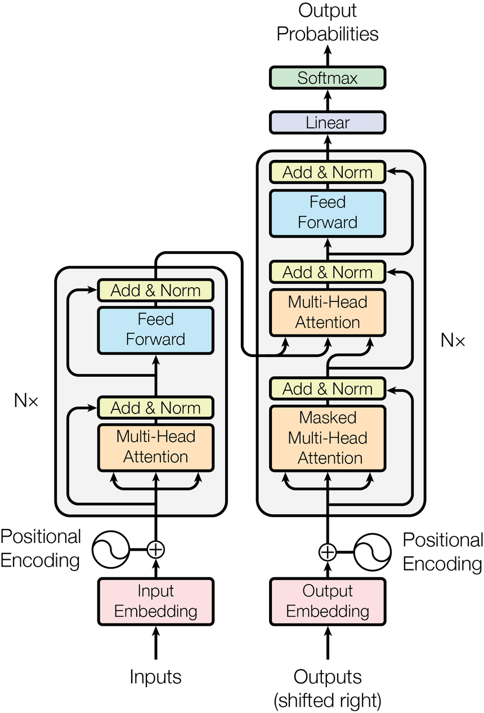

Let's learn about transformers. I'm assuming you've heard the name a thousand times by now, and this tutorial is meant to refresh your memory on what they actually are and why they took over everything.
Here's the problem. Older sequence models like RNNs process one token at a time, so they struggle with long dependencies and cannot parallelize well. If the word that decides the meaning of your sentence showed up 50 words ago, an RNN has to carry that information through 50 sequential steps. Every step is a chance to forget.
CNNs can look at a local neighborhood, but you have to stack a lot of layers before a token on the left end can influence a token on the right end. Long range relations arrive late, if at all.
Transformers replace recurrence and convolutions with one idea: let every token directly interact with every other token in a single step. No waiting in line. The token "it" in "the cat sat on the mat because it was tired" can look straight at "cat" and decide that's what "it" refers to. One hop. That idea has a name: self-attention.
Suppose you have the tokens "the cat sat on the mat". When the model processes "sat", which other tokens should it listen to? Probably "cat" more than "the". Attention is just the model learning those listening weights by itself.
Each token gets projected into three vectors:
Think of it like this. Queries are the listeners, keys are the speakers. A listener compares its question against every speaker's credentials, and then collects a weighted mix of what the speakers have to say. Nobody attends to a speaker with nothing relevant to offer.
We get these vectors by multiplying the input embedding matrix $X$ by learned weight matrices. The embeddings themselves come from a big lookup table: with a vocabulary of 30,000 tokens and $d_{model} = 512$, the embedding matrix is $30{,}000 \times 512$, and each token just looks up its row.
The query and key projections have to land in the same dimension $d_k$, because we are about to dot them against each other. Values usually live there too. Shapes, so you can see the plumbing (with $n = 6$ tokens, $d_{model} = 512$, $d_k = 64$):
The whole attention block is three matrix multiplies. Nothing in there looks at neighboring positions specially; the $6 \times 6$ score matrix is where all the token-to-token interaction lives.
Now the fun part. Real attention heads do not all listen the same way. One head might track local order (each word mostly hears its neighbors), while another tracks meaning (verbs listen to their subjects). These are illustrative weights I picked to show the two patterns, not a real trained run. Pick a head, pick a query word, and watch where it pulls its meaning from:
Attention explorer: two heads, two listening styles. Head 1 tracks local order. Head 2 tracks meaning.
The same six tokens, two completely different mixtures. Read the semantic head row by row and every word's attending tells a story: each "the" listens to its noun ("cat" 0.62, "mat" 0.64), "cat" checks its verb ("sat" 0.58), "sat" checks its subject ("cat" 0.58), "on" checks its object ("mat" 0.56), and "mat" listens back to the verb and preposition acting on it ("sat" 0.32, "on" 0.30). If the bright diagonal looks suspicious, it shouldn't: heavy self-attention is the norm in real models. Each token rebuilds itself as a mix, and "mostly myself with a dash of context" is the most common mix there is. Nobody told the model to split the job this way. It learned it.
The full attention equation is one line:
Read it out loud: take the similarity between every pair of tokens, calm it down with a scaling factor, turn each row into weights that sum to 1, and use those weights to blend the value vectors. That's what the softmax function does: it converts raw scores into a probability distribution over the tokens.
Term by term, for one query token $i$: the score against key $j$ is $\text{score}(i,j) = Q_i \cdot K_j$, a dot product that measures how aligned the two are. The whole $n \times n$ score matrix is $QK^T$. Then the output for token $i$ is a weighted sum, $\text{Output}_i = \sum_j \alpha_{ij} V_j$, where the $\alpha$ are the softmaxed row. Every token rebuilds itself out of all the tokens, weighted by relevance.
Let's understand why we divide by $\sqrt{d_k}$. If you assume the components of $Q$ and $K$ are roughly normal with mean 0 and variance 1, then their dot product has mean 0 and variance $d_k$. So the raw scores grow with the dimension. Say $d_k = 64$: the scores have a spread on the order of $\sqrt{64} = 8$. Feed scores that large into a softmax and it collapses into a one-hot: one weight becomes 1, everything else 0. The query latches onto a single token, ignores all other context, and the gradients vanish because tiny changes in extreme values barely move the output. Dividing by $\sqrt{d_k}$ keeps the softmax in its smooth, trainable zone. Same three scores, with and without the scaling (here $\sqrt{d_k} = 4$):
Raw scores [8, 2, -3]: the 8 eats everything.
Scaled scores [2, 0.5, -0.75]: a real mixture, gradients flow.
Unscaled, the query latches onto one token and the other two might as well not exist. Scaled, the weights are 0.78 / 0.17 / 0.05: still a clear favorite, but the query keeps listening to everyone, and small score changes still move the weights.
So far each token learns one set of listening weights, meaning the model learns one type of relationship at a time. But "cat" relates to "the" grammatically and to "sat" semantically. One head can't do both well.
Multi-head attention runs $h$ attention heads in parallel, each with its own learned projections into a smaller subspace. Take $d_{model} = 512$ and $h = 8$ heads: each head works in $d_k = 512 / 8 = 64$ dimensions, like eight specialists each looking at the sentence through their own lens. Their outputs get concatenated and re-mixed with one final projection $W_O$.
import math
import torch
import torch.nn as nn
class MultiHeadAttention(nn.Module):
def __init__(self, d_model, num_heads):
super().__init__()
assert d_model % num_heads == 0
self.d_k = d_model // num_heads
self.num_heads = num_heads
self.W_q = nn.Linear(d_model, d_model)
self.W_k = nn.Linear(d_model, d_model)
self.W_v = nn.Linear(d_model, d_model)
self.W_o = nn.Linear(d_model, d_model)
def forward(self, x):
B, T, _ = x.shape
# project, then split the last dim into heads
Q = self.W_q(x).view(B, T, self.num_heads, self.d_k).transpose(1, 2)
K = self.W_k(x).view(B, T, self.num_heads, self.d_k).transpose(1, 2)
V = self.W_v(x).view(B, T, self.num_heads, self.d_k).transpose(1, 2)
scores = Q @ K.transpose(-2, -1) / math.sqrt(self.d_k)
heads = scores.softmax(dim=-1) @ V # (B, heads, T, d_k)
concat = heads.transpose(1, 2).reshape(B, T, -1)
return self.W_o(concat)
Written per head $i$, each head gets its own projections $Q^i = X W_Q^i$, $K^i = X W_K^i$, $V^i = X W_V^i$, computes its own output $Z^i$, and then $Z = \text{concat}(Z^1, \dots, Z^h)$ and $O = Z W_O$. In pictures, with $d_{model} = 512$ and $h = 8$:
Nothing is learned in the split itself; it's just a reshape. The learning lives in the per-head $W_Q^i, W_K^i, W_V^i$ and in $W_O$, which decides how to mix the eight specialists back together.
The $W_O$ projection matters more than it looks. Without it, the output would just be a weighted average of values. $W_O$ lets the model combine what the different heads found, back in the model's main feature space.
Here is the classic case where heads split the job. Take the sentence "The animal didn't cross the street because it was too tired." What does "it" refer to? You know it's the animal, but a single attention head has to mix that coreference signal with everything else it tracks. Give the model two heads and they specialize: one head learns the long-range "it means animal" link, the other keeps track of the local syntax around "it". These are illustrative weights again, tuned to show the split:
Two heads, one word. Both heads are answering for the query "it". Watch what each one listens to.
Head A puts 0.55 on "animal": it resolved the pronoun. Head B spreads across "because", "it", "was": it is tracking the local clause structure. One big head would have to average these two jobs into mush. That is the whole argument for multihead.
Now the part people get wrong about multihead. More heads sounds like more parameters, right? It isn't. Watch: fix $d_{model} = 512$ and change only the head count. The QKV projections are $3 \times d_{model} \times d_{model}$ no matter how you slice the 512 dimensions afterward, and the output projection is $d_{model} \times d_{model}$. The total never moves. Heads are a free axis: more specialists, same parameter bill.
Multihead costs nothing (in params). $d_{model} = 512$ is fixed. Move the head slider and watch the parameter total.
Sixteen heads or one, the attention block holds 1,048,576 parameters. What changes is how the 512 dimensions get partitioned: sixteen 32-dim specialists instead of one 512-dim generalist. Representational power goes up, the bill stays flat.
Here's a problem we skipped. Attention treats tokens as a set, not a sequence. It is permutation invariant:
Shuffle the tokens and nothing changes. That's a problem, because word order is the whole point of language. "Dog bites man" and "man bites dog" would look identical:
Attention only sees a set of vectors, never their order. Both rows mix the same three vectors with the same weights, so both produce the same output. Position vectors are the fix: they smuggle the order back in.
The fix: add a position vector $P(t)$ to each token embedding, so a token knows both its meaning and its place. The original paper used fixed sine and cosine waves of different frequencies:
Let's unpack this, one computation at a time.
As $i$ grows, the waves get slower and slower. So every token's position gets encoded in multiple frequency bands: a unique multi-frequency signature. High-frequency dimensions track local order, low-frequency dimensions track long-range order. Sine and cosine together encode each position as a point on a circle, so relative offsets fall out of trig identities.
Two of the $d_{model}$ frequency bands. The fast band ($i = 0$, period $2\pi$) flips sign between neighboring positions, so it is great at local order. The slow band barely moves over the same span, so it carries long-range position. Every position $t$ gets a unique chord played across all the bands at once.
import numpy as np
def positional_encoding(seq_len, d_model):
pos = np.arange(seq_len)[:, None] # (T, 1)
i = np.arange(d_model)[None, :] # (1, D)
angles = pos / np.power(10000, (2 * (i // 2)) / d_model)
angles[:, 0::2] = np.sin(angles[:, 0::2])
angles[:, 1::2] = np.cos(angles[:, 1::2])
return angles # (T, D)
pe = positional_encoding(seq_len=8, d_model=16)
Does it actually capture "closeness"? Cosine similarity between the encoding at position 0 and its neighbors, from a real run of the snippet above:
Nearby positions get similar encodings, distant positions get different ones. The model can read relative distance straight out of these patterns.
Modern models often use learned positional embeddings instead of these fixed waves, but the idea is the same: attention gives you the mixing, position vectors give you the order.
Attention as described lets every token look at every other token. Sometimes we want to forbid that. There are two reasons, and both are enforced the same way: by adding a mask matrix $M$ to the scores before the softmax.
$M_{ij} = 0$ for pairs that may attend, $-\infty$ for pairs that may not. And $-\infty$ plus anything is still $-\infty$, so the softmax hands that cell exactly zero. No parameters, no learning, just arithmetic.
When you batch sequences of different lengths, the short ones get padded with dummy tokens. You don't want real tokens attending to dummies, so you mask out the padding keys: if key $j$ is padding, every query $i$ ignores it.
Think of queries as listeners and keys as speakers. A padding token as a speaker is dangerous: a real listener might hear it and get confused. A padding token as a listener is harmless, because we never ask for its opinion anyway (more on that below).
In a decoder that generates left to right, token $t$ must not peek at tokens after $t$. We block the future with an upper-triangular mask:
At position 1, a token sees only itself. At position 2, itself and token 1. And so on. That is what makes the model autoregressive.
Mask playground. Same 5-token grid, live. Flip between the three masks and watch which cells get shut off:
| k1 | k2 | k3 | k4 | k5 | |
|---|---|---|---|---|---|
| q1 | |||||
| q2 | |||||
| q3 | |||||
| q4 | |||||
| q5 |
Padding mask here pretends the last two tokens are dummies: whole columns k4 and k5 go dark, for every query. The causal mask instead kills the upper triangle. Two different reasons, one mechanism.
Causal attention on real words. The same sentence, written left to right the way a decoder writes it. At each step the newest word can only look back at the words already written:
This is why a generator cannot cheat: at the moment "sat" is written, "on the mat" does not exist yet, so there is nothing to attend to. The mask is not hiding information. The information is not there.
Attention masking stops real tokens from hearing padding speakers. But we also don't want to penalize the model for whatever it predicts at padding positions, so we zero out the loss contribution there. That's loss masking: the output at a padded query position simply doesn't count toward training.
You need both. One guards the context, the other guards the grade.
A transformer block is attention plus a small feed-forward network, wrapped in residual connections and layer normalization. The encoder and the decoder are just two different ways of stacking those blocks.
The encoder reads the whole input at once. Every token attends to every other token, past and future. It's for understanding: "here is the full sentence, build me a rich representation of it."
The decoder writes the output one token at a time, and it has two extra constraints. First, masked self-attention: when predicting token 5, the model must not peek at token 6. That's the causal mask from the section above, in code:
import numpy as np
def causal_mask(T):
return np.tril(np.ones((T, T))) # 1s on and below the diagonal
scores = np.array([[ 1.76, 0.40, 0.98, 1.91],
[ 1.87, -0.98, 0.95, -0.15],
[-0.10, 0.41, 0.14, 1.45],
[ 0.76, 0.12, 0.44, 0.33]])
masked = np.where(causal_mask(4), scores, -1e9)
| k0 | k1 | k2 | k3 | |
|---|---|---|---|---|
| q0 | 1.76 | -inf | -inf | -inf |
| q1 | 1.87 | -0.98 | -inf | -inf |
| q2 | -0.10 | 0.41 | 0.14 | -inf |
| q3 | 0.76 | 0.12 | 0.44 | 0.33 |
Row 2 can only attend to columns 0 and 1. The future is -inf, which softmax turns into 0.
Second, cross-attention: the decoder also attends to the encoder's output. The queries come from the decoder, asking what it needs next. The keys and values come from the encoder, which remembers the source sentence.
Say the encoder processed an English sentence and the decoder is writing Farsi. The decoder's query for "pishi" (kitten) asks the encoder: which English words matter for this step? The encoder's keys answer "cat", and the decoder pulls in "cat"'s value. Each decoder position distributes its attention over all encoder positions, and the score matrix has shape $n_{target} \times n_{source}$.
The encoder-decoder transformer. The encoder's output is a fixed memory of the source; every decoder layer queries it with cross-attention while generating the target left to right.
Each encoder block is the same recipe: multi-head attention to mix information between tokens, then a position-wise feed-forward network applied to each token independently. Around each, a residual connection plus layer normalization.
class EncoderBlock(nn.Module):
def __init__(self, d_model, num_heads, d_ff):
super().__init__()
self.attn = MultiHeadAttention(d_model, num_heads)
self.ln1 = nn.LayerNorm(d_model)
self.ln2 = nn.LayerNorm(d_model)
self.ffn = nn.Sequential(
nn.Linear(d_model, d_ff),
nn.ReLU(),
nn.Linear(d_ff, d_model),
)
def forward(self, x):
x = x + self.attn(self.ln1(x)) # mix between tokens
x = x + self.ffn(self.ln2(x)) # refine each token alone
return x
Two things worth noticing. The FFN expands $d_{model}$ up to $d_{ff}$ (usually $4 \times d_{model}$) and projects back down. The non-linearity is more expressive in the higher dimension, so the model does its heavy per-token thinking there.
And the residuals. Why do this? Deep networks suffer from vanishing gradients, and the residual path gives gradients a shortcut straight back. With $H = X + f(X)$, the gradient is $I + df/dX$: the identity term means the gradient always has a clean road home. We always try to hold on to the original information using residual connections. (This snippet uses Pre-LN, layer norm before the sublayer, which keeps that residual path clean. The original paper used Post-LN. Both work; Pre-LN trains more stably at depth.)
In the original paper, LayerNorm sat after the residual add (Post-LN): $H_1 = \text{LayerNorm}(X + \text{MHA}(X))$, then the FFN with another add and norm, $H_2 = \text{LayerNorm}(H_1 + \text{FFN}(H_1))$. Modern practice moves the norm inside the branch, before the sublayer (Pre-LN): $H = X + \text{MHA}(\text{LayerNorm}(X))$.
This ordering matters. With a clean residual path $H = X + f(X)$, the gradient is $dH/dX = I + df/dX$: the identity matrix rides through untouched. With Post-LN, $H = \text{LayerNorm}(X + f(X))$, the gradient has to squeeze through the LayerNorm's Jacobian. Pre-LN leaves the shortcut clean, which is why deep transformers train more stably with it.
LayerNorm normalizes each token's own feature vector: $\text{LayerNorm}(x) = \gamma (x - \mu)/\sigma + \beta$. No mixing across tokens, no mixing across the batch. BatchNorm needs big consistent batches to be accurate, and at inference an autoregressive model generates one token at a time, so batch statistics would be meaningless. LayerNorm doesn't care about any of that. A concrete run, one token with 4 features, $\gamma = 1$, $\beta = 0$:
That's all LayerNorm is: subtract your own mean, divide by your own spread, then optionally rescale with the learned $\gamma$ and shift with $\beta$. No batch, no neighbors, no sequence length involved.
A decoder block is the same idea with one more sublayer in the middle: masked self-attention, then cross-attention against the encoder output, then the FFN, each wrapped in add and norm. In Pre-LN form:
Notice the cross-attention queries come from $H_1$, right after self-attention, not after the FFN. $H_1$ already integrated the past target tokens; the FFN is just a position-wise MLP that adds no new cross-token context, so it wouldn't make the queries any smarter about what to ask the encoder.
The paper drew the whole thing in one diagram, and it is worth looking at the original before we move on. Below is Figure 1 of "Attention Is All You Need", with a tour.

Figure 1 of Vaswani et al. (NeurIPS 2017), the actual figure file from the paper's arXiv e-print source, unmodified. arXiv:1706.03762
Figure 1, verbatim caption: "The Transformer - model architecture."
Vaswani, A., Shazeer, N., Parmar, N., Uszkoreit, J., Jones, L., Gomez, A. N., Kaiser, L., and Polosukhin, I. Attention Is All You Need. NeurIPS 2017. arXiv:1706.03762. https://arxiv.org/abs/1706.03762
Here's the thing nobody tells you at first. The encoder-decoder picture above is the 2017 original, but almost every model you actually use is decoder-only. GPT, LLaMA, all of them. They throw away the encoder and the cross-attention entirely.
Why? For text generation, decoder-only models typically outperform encoder-decoder models because they can be scaled bigger. Everything is just context: you feed the prompt in, and the model predicts the next token, then the next, autoregressively. For translation you just put a separator token between source and target and let the model figure out the boundary. Source or target doesn't matter; it's all one sequence.
The training objective is dead simple: maximize the probability of each token given all previous tokens. That's cross entropy at every position:
Training is just next-token betting at every position simultaneously, thanks to the causal mask. The model never sees the answer; it only gets graded on it.
A minimal GPT-style model, complete:
import math
import torch
import torch.nn as nn
import torch.nn.functional as F
class CausalSelfAttention(nn.Module):
def __init__(self, d_model, num_heads):
super().__init__()
assert d_model % num_heads == 0
self.d_k = d_model // num_heads
self.num_heads = num_heads
self.qkv = nn.Linear(d_model, 3 * d_model)
self.out = nn.Linear(d_model, d_model)
def forward(self, x):
B, T, _ = x.shape
q, k, v = self.qkv(x).chunk(3, dim=-1)
q = q.view(B, T, self.num_heads, self.d_k).transpose(1, 2)
k = k.view(B, T, self.num_heads, self.d_k).transpose(1, 2)
v = v.view(B, T, self.num_heads, self.d_k).transpose(1, 2)
scores = q @ k.transpose(-2, -1) / math.sqrt(self.d_k)
mask = torch.tril(torch.ones(T, T, device=x.device)).bool()
scores = scores.masked_fill(~mask, float("-inf"))
out = scores.softmax(dim=-1) @ v
return self.out(out.transpose(1, 2).reshape(B, T, -1))
class Block(nn.Module):
def __init__(self, d_model, num_heads, d_ff):
super().__init__()
self.attn = CausalSelfAttention(d_model, num_heads)
self.ln1 = nn.LayerNorm(d_model)
self.ln2 = nn.LayerNorm(d_model)
self.ffn = nn.Sequential(
nn.Linear(d_model, d_ff), nn.GELU(), nn.Linear(d_ff, d_model))
def forward(self, x):
x = x + self.attn(self.ln1(x))
x = x + self.ffn(self.ln2(x))
return x
class MiniGPT(nn.Module):
def __init__(self, vocab_size, d_model, num_heads, d_ff, num_layers, max_len):
super().__init__()
self.tok = nn.Embedding(vocab_size, d_model)
self.pos = nn.Embedding(max_len, d_model)
self.blocks = nn.Sequential(
*[Block(d_model, num_heads, d_ff) for _ in range(num_layers)])
self.ln = nn.LayerNorm(d_model)
self.head = nn.Linear(d_model, vocab_size, bias=False)
self.head.weight = self.tok.weight # weight tying
def forward(self, idx):
B, T = idx.shape
x = self.tok(idx) + self.pos(torch.arange(T, device=idx.device))[None]
return self.head(self.ln(self.blocks(x))) # (B, T, vocab)
Two details in there. Weight tying: the output projection ($d_{model} \times |V|$) and the input embedding ($|V| \times d_{model}$) are the same matrix. The model doesn't need to learn twice that similar embeddings should decode similarly, and you save a big chunk of parameters. (In translation you wouldn't tie to the encoder's embeddings, since those are a different language; you'd tie to the decoder's input embeddings.) GELU instead of ReLU in the FFN is the modern default; it just trains a bit better.
Training is one loop. The target at each position is the input shifted by one:
model = MiniGPT(vocab_size=10000, d_model=256, num_heads=8,
d_ff=1024, num_layers=4, max_len=128)
opt = torch.optim.AdamW(model.parameters(), lr=3e-4)
for x, y in train_loader: # x, y: (B, T), y = x shifted by one
logits = model(x) # (B, T, vocab)
loss = F.cross_entropy(logits.view(-1, 10000), y.view(-1))
opt.zero_grad()
loss.backward()
opt.step()
At inference nothing learns. You feed a prompt, take the logits at the last position, sample one token, append it, and repeat. The temperature controls how wild the sampling gets: $T > 1$ flattens the distribution (more random), $T < 1$ sharpens it (closer to greedy), $T = 1$ is plain softmax.
@torch.no_grad()
def generate(model, idx, max_new_tokens, temperature=1.0):
for _ in range(max_new_tokens):
idx_in = idx[:, -model.pos.num_embeddings:] # respect context length
logits = model(idx_in)[:, -1, :] / temperature
nxt = torch.multinomial(logits.softmax(dim=-1), num_samples=1)
idx = torch.cat([idx, nxt], dim=1)
return idx
One practical note: naive generation recomputes keys and values for all previous tokens at every step, so latency grows with the sequence. Real deployments cache the K/V of past tokens and only compute the new one, which keeps per-token latency roughly constant. How big is that saving, exactly? Count it:
The KV cache payoff. Generating $T$ tokens, one step at a time. Without a cache, step $t$ recomputes attention over all $t$ tokens so far. With a cache, step $t$ reuses the stored keys and values and only touches the new token. Numbers are per layer with $d = 512$, counting the $QK^T$ and weighted-sum terms.
Now switch gears. Think about online speech recognition or real-time translation: the model can't see the whole sequence, because the future hasn't been spoken yet. Instead of full causal attention, you use windowed attention: each query only looks back a fixed number of frames, enforced by masking everything outside the window to $-\infty$.
# windowed causal mask: each query sees the last `window_size` frames
mask = torch.full((n, n), float("-inf"))
for i in range(n):
start = max(0, i - window_size + 1)
mask[i, start:i+1] = 0
Say your frames are 10 ms each and phonemes are 20 to 50 ms long, about 2 to 5 frames per phoneme. You'd pick a window around 10 frames: enough to cover a whole phoneme plus blurry boundaries, without paying for word-level context you don't need. The rule of thumb: find the smallest unit you must capture (a phoneme, a gesture, a word), convert it to frames, and start there.
A neat detail: the window doesn't reset the model's memory the way chopping the input into chunks would. At layer 1 each token blends its 10-frame window; at layer 2 those enriched tokens carry their context forward, so the effective span grows with depth, just like a receptive field. Stack enough layers and a small window still sees far.
The extreme version of this is chunked streaming: the model emits output in fixed-size chunks, and within a chunk every token may see the whole chunk. That means token 9 in a chunk of 4 can peek at tokens 10 and 11, slightly into its own "future". The price of that peek is latency: you can't emit the chunk until all 4 tokens have arrived. Bigger chunks, more context, slower response. Try it:
Chunked streaming mask. A 16-token sequence. Pick a chunk size and see which tokens each query is allowed to read. Blue means allowed.
Chunk 1 is strictly causal: decide now, see little. Chunk 16 is full attention: see everything, wait for everything. Every streaming system lives somewhere on this slider, trading context for latency.
Let's count FLOPs, because the bill is the reason half of transformer research exists. Start with the old guys for calibration. An RNN step is a couple of $d \times d$ matrix-vector products, so $O(d^2)$ per step and $O(n d^2)$ for the sequence. Linear in length, but step $t$ can't start until step $t-1$ finishes. A 1D CNN with kernel $k$ costs $O(n k d^2)$ per layer, fully parallel, but with a limited receptive field.
In attention, the expensive part is the score matrix. Multiplying $Q$ ($n \times d$) by $K^T$ ($d \times n$) costs $O(n^2 d)$, and applying the weights to $V$ costs another $O(n^2 d)$. Counting a multiply-add as 2 FLOPs, that's about $4 n^2 d$ per layer for the attention terms. The FFN's two matmuls (up to $4d$ and back) cost about $16 n d^2$ per layer. I'm ignoring the QKV projections, softmax, and norms here to keep the comparison clean; they don't change the story.
The story: attention grows with $n^2$, the FFN with $n$. For short sequences the FFN dominates; for long ones attention eats everything. Set the two equal and the crossover lands at $n = 4d$. Double the sequence length and the attention bill quadruples. Move the sliders:
The quadratic bill. Attention FLOPs grow as $n^2$, FFN FLOPs as $n$. The curves cross exactly at $n = 4d$.
Counting only the $n^2$ score/weighted-sum terms for attention and the two FFN matmuls; projections, softmax, and norms ignored. At $n = 100{,}000$ and $d = 512$, one head's attention matrix alone holds 10 billion entries, 80 billion across 8 heads. That is why long-context models need sparse, windowed, or linear attention.
The toy runs above are mine. The numbers below are reference results from the original paper, Vaswani et al. 2017, "Attention Is All You Need", on WMT 2014 English-German and English-French (newstest2014). I'm labeling them as reference because I didn't train these myself.
Read that again: the base model beat the previous best system, which was an ensemble, with a single model trained in half a day. The training recipe was Adam ($\beta_1 = 0.9$, $\beta_2 = 0.98$, $\epsilon = 10^{-9}$) with a warmup of 4000 steps and dropout 0.1:
In words: ramp the learning rate up linearly for the first 4000 steps, then decay it proportionally to the inverse square root of the step. The warmup matters. Transformers are twitchy at the start of training, and hitting them with a full learning rate on step one is a good way to get NaNs.
The recipe: tiptoe for the first 4000 steps while the attention weights are still random, then decay as $1/\sqrt{\text{step}}$. At step 12000 the rate is down to $1/\sqrt{3} \approx 0.58$ of the peak. Skip the warmup and the early gradients explode before the model learns anything.
That's the whole transformer: why it exists, the attention idea worked term by term, masking to control who sees what, multihead to split the work, positions to recover order, the encoder-decoder split, the decoder-only models that run the world now, and what it all costs. Where to go from here:
And that's it! Bye bye.